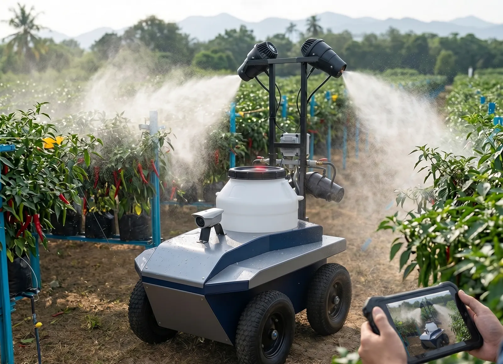
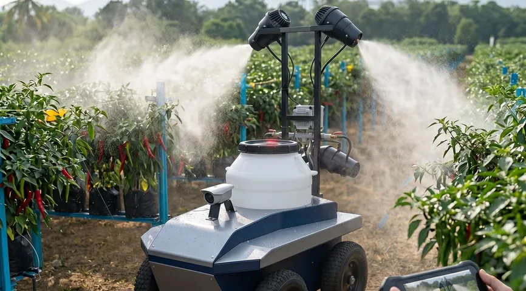
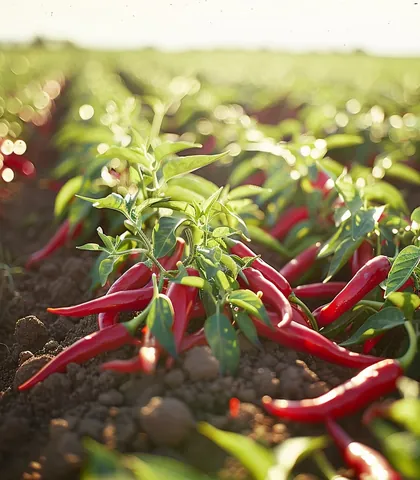
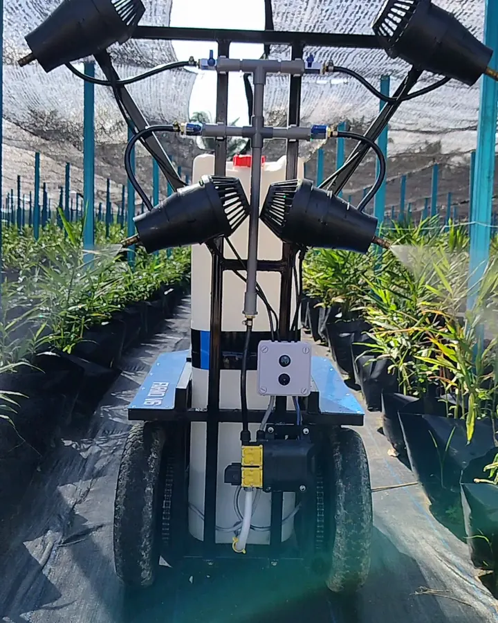
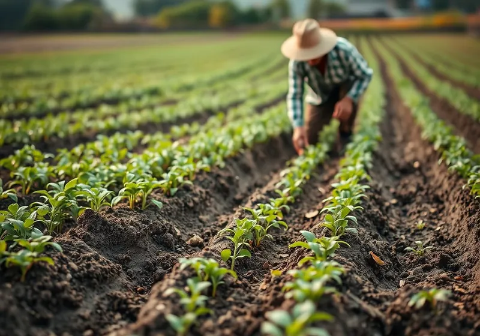
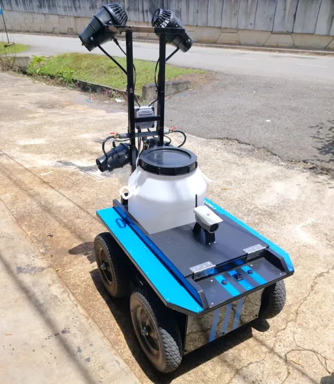

AI-assisted machines, built for real farms.
Blue Sky Farms builds farm machines designed to work with AI crop-health detection and a simple monitoring dashboard — so what happens in the field is visible, not guessed.
Talk to our team
- Mechanised spraying
- Built to inspect crop health
- Designed for at-a-glance monitoring
What we build
Three parts designed to work together: a spraying machine, a crop-health check and a farm dashboard.
-

Concept render
Automate
Spraying, mechanised.
A wheeled machine that carries its own tank and pump down the crop rows, with nozzles on both sides spraying the plants as it moves. Built to run the same spraying pass consistently, row after row.
-

Detect
Crop health, flagged early.
A vision system built to inspect plants along each row and flag early signs of pests or disease for a closer look. It is designed to support your team's judgement, not replace it.
-
Monitor
Your farm, at a glance.
A simple dashboard designed to bring farm status, weather and spraying plans together in one view, so it is easier to decide what needs attention next.
See it in action
Our machine at work in the field.
Footage: Blue Sky Farms × Farmotic

Who we are
A farm technology team based in Malaysia.
Blue Sky Farms is a farm technology team based in Kepong, Kuala Lumpur. We develop spraying machines, crop-health detection and farm monitoring tools that are designed to work together. Our focus is practical equipment that fits the way farms already run.


Talk to our team
Questions about the machine? Reach us using the details below.
Company
BSF Technology Sdn Bhd · Company No. 202501032497 (1633908-U)
Address
No. 42-1, Jalan Prima 2, Pusat Niaga Metro Prima Kepong, 52100 Kuala Lumpur, Malaysia
Office hours
Monday to Friday, 9:00 am to 6:00 pm
Saturday, 9:00 am to 12 noon